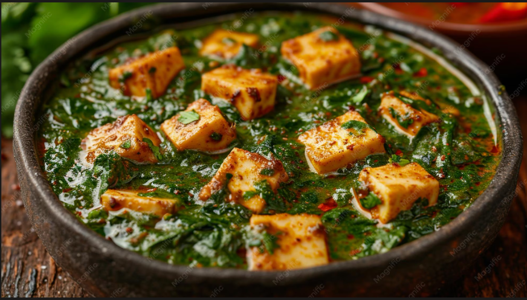

Home Page
Palak Paneer

Description
An authentic Indian dish of spinach and paneer.
Ingridents
- ⅓ cup ghee (clarified butter)
- 1 bulb garlic, peeled and minced
- ½ teaspoon toasted cumin seed
- 1 (6 ounce) can tomato paste
- 1 (3 inch) piece ginger, peeled and minced
- 2 teaspoons garam masala, divided
- 1 teaspoon salt
- 1 large onion, finely chopped
- 1 cup water, or as needed
- 1 (10 ounce) box frozen chopped spinach, thawed and drained
- 1 pound paneer, cut into 1/2-inch cubes
- ¼ cup chopped fresh cilantro
- 1 teaspoon garam masala
Directions
-
Melt ghee in a saucepan over medium-low heat. Stir in garlic and cumin seed; cook until the garlic softens, about 3 minutes. Add tomato paste, ginger, 1 teaspoon garam masala, salt, onion, and water. Increase heat to medium, and stir until the tomato paste dissolves. Simmer slowly for 1 hour, adding water as needed to maintain a sauce-like consistency.
-
Stir in spinach and cook until hot, about 5 minutes.. Add paneer, and allow to cook an additional 5 minutes, or until hot. Pour into a serving dish and sprinkle with cilantro and remaining 1 teaspoon garam masala.